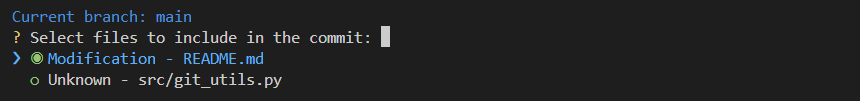
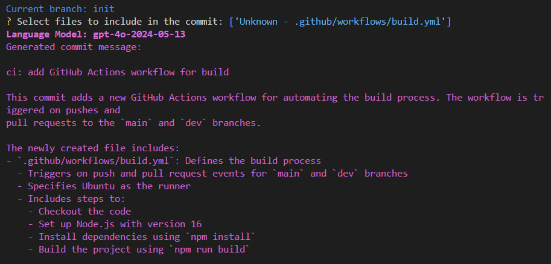

Usage Instructions
Once you have set up the script using the installation instructions, you can use the ai_diff_commit command to generate commit messages based on the changes in your repository.
Flags
-a, –all: Add all changes in the repository to the commit. By default, only the modified files are added.
-h, –help: Display help information for the script.
-m, –model: Specify the OpenAI API language model to use for generating commit messages.
-p, –push: Automatically push the changes to the remote repository after committing.
Example
To generate a commit message based on all changes in the repository and push the changes to the remote repository:
`bash
ai_diff_commit -a -p
`
File Selection
The script will prompt you to select the files you want to include in the commit. You can use the arrow keys to navigate the list and the spacebar to select or deselect files. Press Enter to proceed with the selected files.

Example Output
